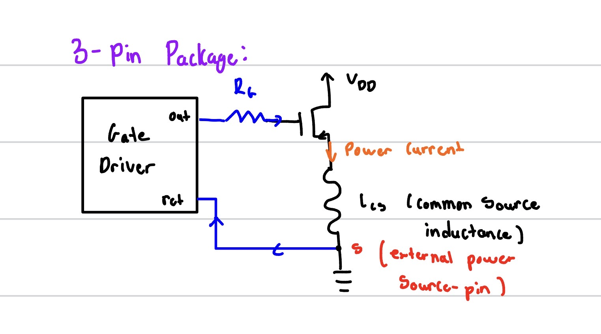
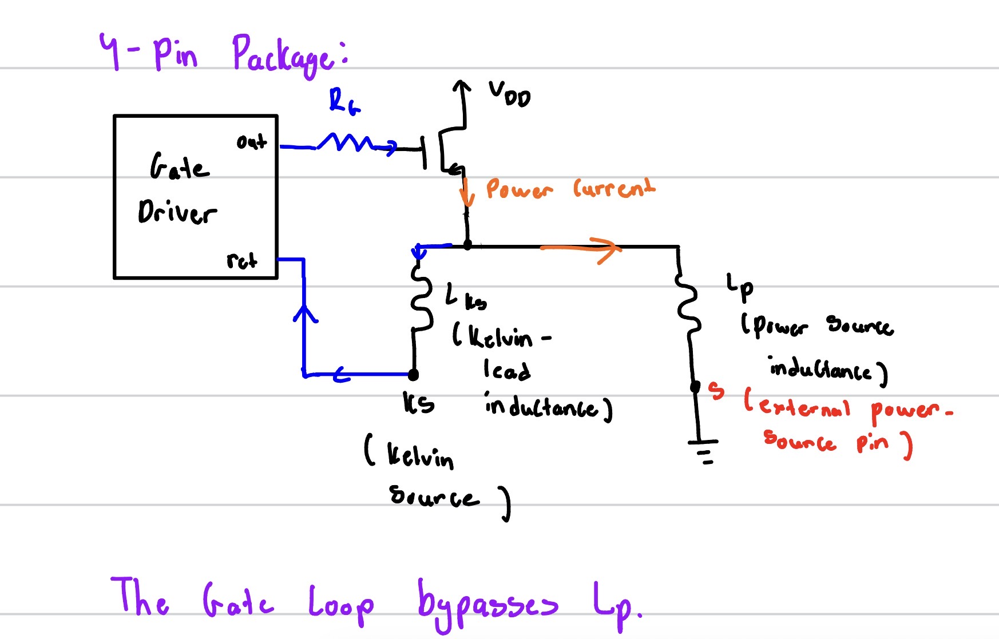

a Kelvin source changes the switching tradeoff
I recently came across a paper on the tradeoff between switching losses and EMI in SiC MOSFETs, and one thing stood out to me:
A Kelvin source connection doesn't make switching “better”—it changes the switching tradeoff.
In a conventional 3-pin SiC MOSFET, part of the source inductance is shared by both:
- Power current → power source
- Gate-driver return → power source
During turn-on, the rapidly changing source current creates a voltage across this shared inductance. Since the MOSFET responds to the actual gate-to-source voltage at the die, this common-source inductance opposes the applied gate drive.
The result:
- lower di/dt
- lower dv/dt
- slower switching
- higher switching loss

The intuitive conclusion is that common-source inductance should always be minimized. A Kelvin source connection does exactly that by providing a separate, low-current source connection for the gate-driver return:
- Power current → power source
- Gate driver → Kelvin source
The two connections represent the same electrical node at DC, but behave very differently during a fast switching transient. By preventing most of the power-path inductance from appearing in the gate-driver loop, the Kelvin connection allows the MOSFET to switch faster and reduce switching loss.

Wolfspeed gives a good example at 30 A:
- TO-247-3, ~12 nH source inductance: ~430 µJ
- TO-247-4 with Kelvin source: ~150 µJ
But fast switching also means higher di/dt and dv/dt, which can increase overshoot, ringing, EMI, and parasitic effects if the rest of the gate-driver design isn't reconsidered.
So switching from a conventional source connection to a Kelvin source isn't simply a packaging improvement that can be done in isolation. It changes the switching dynamics and inherently changes the gate-driver design required around the device.